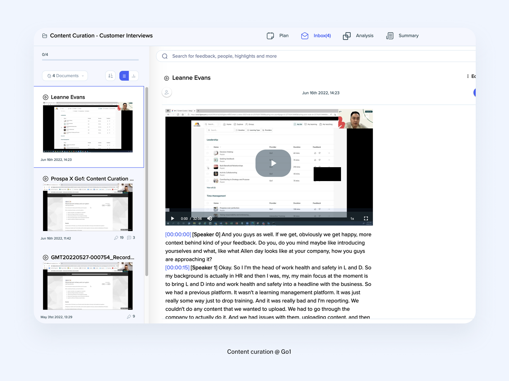

Solution
Validation
& User Testing
Your prototype is a hypothesis. Testing is how you find out if it's right.
Winnie
Nguyen
Six parts. One loop closed.
Validation
Mindset
A prototype is not a deliverable. It's a hypothesis.
think?"
Showing people your prototype and asking for reactions produces opinions — useful for ideas, not for decisions.
Testing starts with a question and lets evidence answer it.
Different questions need different tests.
Usability
Can users complete the task? Where do they get stuck?
Desirability
Do users want what this offers? Does it feel right?
Comprehension
Do users understand what this is and what to do?
Choose
Your Method
Right method for the right question.
test Five-second
test Concept
test Moderated Unmoderated A/B
test
Moderated testing.
A live session, captured.

A moderated interview from Go1 — the recording is synced to an auto-timestamped transcript, so every observation stays anchored to what actually happened.
Unmoderated testing.
Results, at scale.

A Maze test report — task completion rate, success rate, and the step-by-step navigation overview show exactly where users dropped off.
Do you need the why,
or just the what?
The 5-user rule applies to moderated qualitative testing only — unmoderated and A/B tests need larger samples to be valid.
Look at your prototype. What's the one thing you most want to know? Pick moderated or unmoderated — and write one sentence justifying the choice. Share back.
Write Your
Test Plan
Five components. One page.
One page, ready to run.

A research plan document from the Go1 Content Curation project — goal, participants, tasks, scenarios, and success criteria, all on one page.
Neutral language. No hints.
"Click the Buy Now button to purchase the item."
Gives away where to click.
"Would you use this checkout flow?"
Asks for opinion, not behaviour.
"Imagine you want to buy something. What would you do?"
Too vague — no context.
"You've decided to buy a gift for a friend. Show me how you'd complete the purchase."
Realistic context, neutral, clear goal.
"You need to update your billing address before your next payment. How would you do that?"
Specific situation, no hints.
"You've just joined a new team. Set up your profile so teammates can find you."
A role and a reason to act.
Write a draft test plan. Then tighten it: cut any leading language, fix the success criteria, adjust the participant profile to match your real user. You leave with a test plan you can use this week.
Run the
Session
Watch.
Listen.
Don't help.
Six principles.
Ask before you show
Context questions first — build rapport and a baseline.
Test on the right people
Not colleagues. Real potential users — and extreme users.
Ask, don't tell
Turn questions back: "What would you do if I wasn't here?"
Stay neutral
Don't sell the design. Let the prototype speak.
Adapt when needed
Rephrase a confusing prompt. Rigid scripts that yield no data are worse.
Let users contribute
"I wish this did X" — ask them to describe it. It reveals the need.
Synthesise
& Prioritise
Separate observations from interpretations.
Likes
What worked. What users responded positively to.
Criticisms
Where users got stuck, confused, or frustrated.
Questions
Questions the session raised — from users or the team.
Ideas
Ideas the session sparked — suggestions and insights.
The rule: In Criticisms, write what the user did — not what you think it means. "User spent 40 seconds on the payment screen without clicking" is an observation. "The payment screen is confusing" is an interpretation. Keep them separate.
Raw notes, before themes.

Raw interview notes from Go1 — sticky notes organised by participant across the board. Capture first, interpret later.
What users did → what it means.
Make the evidence official.
It earns credibility
Backed by quotes, not just stickies.
It travels
Anyone can read it, long after the session.
It drives decisions
Each finding points to a fix.

A research report from Go1 — observations translated into structured findings, backed by participant quotes and screenshots.
Not all issues are equal.
Investigate
Severe but rare — dig in to confirm before committing.
Fix immediately
Severe and common — top of the fix list.
Monitor
Minor and rare — note it and move on.
Polish
Minor but widespread — easy wins worth tidying.
Fix now or plan for later?
Plan next sprint
Matters, but costly — roadmap it and break it down.
Fix now
High value, low cost — do it this iteration.
Defer
Low value and hard — drop or revisit later.
Quick win
Cheap and easy — pick up if time allows.
AI-Assisted
Workflow
Each output becomes the next input.
Hypothesis
Method
Test plan
Script
Capture grid
Findings
Priorities
Turn the prototype into a hypothesis.
Weigh the method.
Draft the test plan.
Write the moderator script.
Now run the session with real users.
AI cannot recruit participants or watch them use the product. The recording and transcript come from you.
Sort the transcript into the grid.
Draft findings from the grid.
Turn findings into tickets.
Testing doesn't end. It iterates.
Observe
Synthesise
Prioritise
Fix
Retest
Run a moderated test. Deliver an insight report.
A moderated usability test with a real participant.
An insight report: what you saw, and what it means.
Choose your own tools and the format of your report.
Five things to remember.
"Testing is not a final step. It's how design earns its decisions."
The prototype you built is the beginning of the evidence, not the end of the work. Every finding from a test session brings you closer to something that actually works for real people.